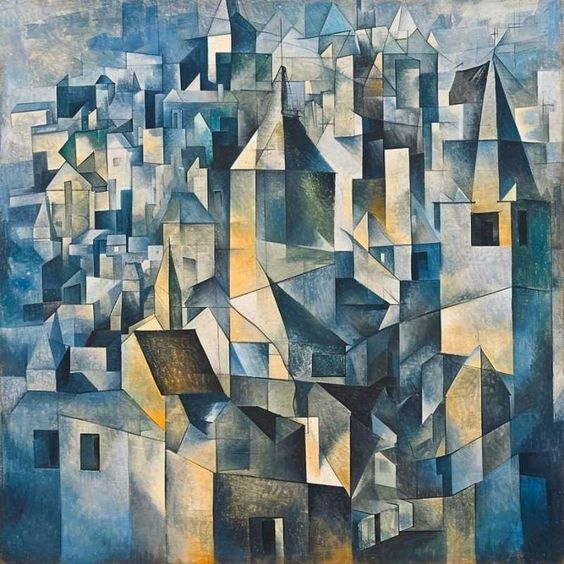

Glass painting
Acrylic paintings
Oil painting
Digital painting
Cubism
Glass painting or glass painter might refer to either technique, but more usually enamelled glass. It may also refer to the cinematic technique of matte painting, which is a type of painted representation of landscape.

For more details, visit this page.
Acrylic paint is a fast-drying paint made of pigment suspended in acrylic polymer emulsion and plasticizers, silicone oils, defoamers, stabilizers, or metal soaps.

For more details, visitthis page.
Oil paint is simply beautiful to watch in action, no matter the painting you're looking at. Artists love it because they can create depth through different layers of pigment applied over time.

For more details, visit this page.
Digital painting is a catch-all term that encompasses many different forms of digitally created art, such as concept art and digital illustration. .

For more details, visit this page.
Cubism was a revolutionary new approach to representing reality.
For more details, visit this page.